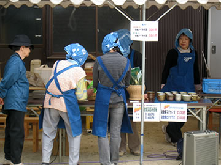
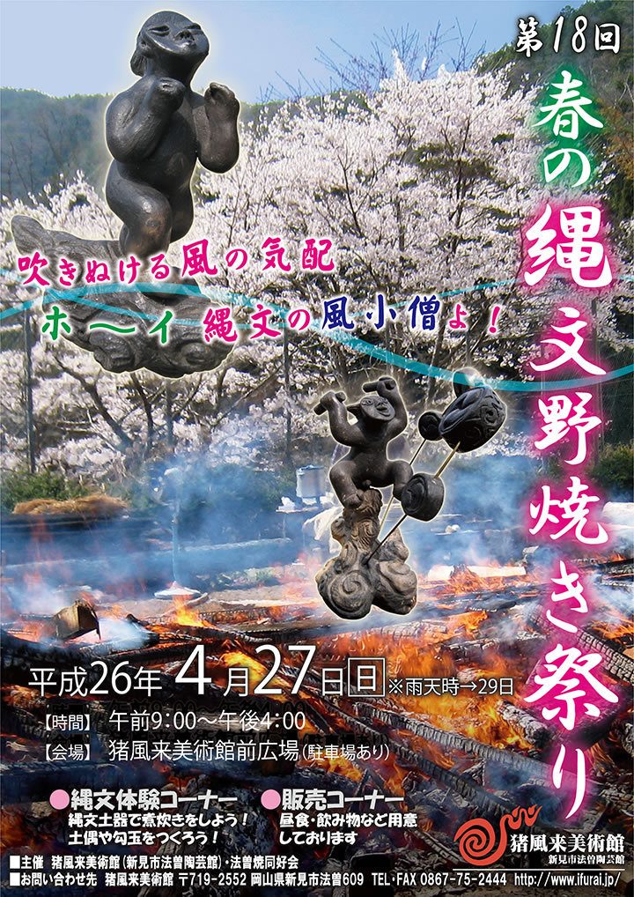

― これまでのイベント（記録） ―
| （画像をクリックで拡大します） | |
熱い野焼き！ 熱い思い！ 熱い縄文！
うす雲からときおり太陽が顔をのぞかせ、風小僧がそこかしこにつむじ風を渦巻かせる。
４月２７日野焼き当日、心配されていた雨もなく、絶好の野焼き日和！
=∴=∵=∴=∵=∴=∵=∴=∵=∴=∵=∴=∵=∴=∵=∴=∵=∴=∵=∴=∵=∴=∵=∴=∵=∴=∵=∴=
《縄文野焼き》
早朝から、野炉を暖めるために火が入れられ野焼きがスタート。
今回焼く約60点の作品が火の周りに並べられる。
あぶり焼きでまんべんなく暖められて、手が触れられないほど熱くなった頃に火床も出来上がり、作品を真ん中に入れます。

|

|

|
|
| （画像をクリックで拡大します） | |
外側に木を積んで徐々に火力が上がってゆく。
作品がほんのりと黒く色づきはじめ、段々と濃い焦げ茶に変化してくるまで、火を大きく育てます。

|
|

|

|

|
|
| （画像をクリックで拡大します） | |
頃合いを見て一気に木を積み、炎が作品を覆いつつむクライマックス！
900度を超える熱に、野焼きスタッフの髪もチリチリと焦げるほど。
大きな火柱が風にうねり、火竜になって天に昇ってゆきます。

|
|
| （画像をクリックで拡大します） | |
燃えきった材木が落ちて、その中から火のパワーを宿した作品が姿を現します。
どれも割れひとつない見事な焼き上がりです。
いくつかは更にススキでいぶし焼きにし、黒くひかる仕上がりに。
こうして野焼きは天気の味方もあり、見事大成功に終わりました。

|

|

|
|

|
|
| （画像をクリックで拡大します） | |
県内はもとより、遠く秋田・東京・福岡・徳島など各地から、前日や早朝のうちから人が駆けつけてくれました。
当日は約150名が縄文野焼きの醍醐味を堪能。
今回は特に、縄文に興味をもつ陶芸家や現代アーティスト、芸大生などの参加がありました。
これまでにも増して広域からの参加があり、「縄文」に興味と魅力を感じる人びとが増えているのを感じます。
日本古来の文化的根源であり、自然と共生し、生と死と再生への畏怖と祈りの世界観が表現された縄文の造形。
アートの始原に魅せられ、現代縄文アートとして新たな創作に意欲をもつ多くの人々の注目がいま、
猪風来美術館へと向かってきているのを実感します。

|

|
| （画像をクリックで拡大します） | |
=∴=∵=∴=∵=∴=∵=∴=∵=∴=∵=∴=∵=∴=∵=∴=∵=∴=∵=∴=∵=∴=∵=∴=∵=∴=∵=∴=
《縄文体験コーナー》
～縄文土器で煮炊きをしよう～
２つの土器で煮炊きをしました。
何年も煮炊きに堪えて年季の入った、風格ある土器を土にすえる。
周りに薪をおいて野焼きの火を移して焚き、土器をカンカンに暖めて水をいれます。
しっかりと沸騰したところで材料を入れて煮込みます。
今回はタカキビ粉を使った団子汁。
みんなで野性的な味に舌鼓を打って楽しみました。

|

|
| （画像をクリックで拡大します） | |
～粘土でつくろう・石で勾玉をつくろう～
土偶や小さい土器など、創意あふれる作品に挑戦！
縄を転がして縄文を施し、丁寧に文様を入れるほどに魂がこもって縄文らしいマジカルな雰囲気に。
黒や白、ピンクの石からいろんな勾玉が出来上がりました。
天然の石の中に隠された思わぬ色が現れてきて素敵な勾玉に。
丸々した形や角ばったものまで様々な勾玉のペンダントの出来上がり。
子供から年配の方々まで和気あいあいの体験となりました。

|
|
| （画像をクリックで拡大します） | |
=∴=∵=∴=∵=∴=∵=∴=∵=∴=∵=∴=∵=∴=∵=∴=∵=∴=∵=∴=∵=∴=∵=∴=∵=∴=∵=∴=
《販売コーナー》
法曽焼同好会地元会員による販売コーナーでは、昼食として「いのししカレー」「チキンカレー」などが
用意されました。
特にいのししカレーが好評でほとんど完売。
野焼きスタッフのエネルギー補充にもばっちり。
また、地元産品として「法曽茶」と「法曽焼き茶碗」も販売されました。
《いのりの土偶づくり》
昨年に引き続き、大震災に心を寄せる「いのりの土偶づくり」がおこなわれました。
みなさんのご協力ありがとうございました。
|  |

|
| （画像をクリックで拡大します） | |
=∴=∵=∴=∵=∴=∵=∴=∵=∴=∵=∴=∵=∴=∵=∴=∵=∴=∵=∴=∵=∴=∵=∴=∵=∴=∵=∴=
|  |
| 【「第18回 春の縄文野焼き祭り」チラシ】 →（表面）PDF版を開く →（裏面）PDF版を開く |